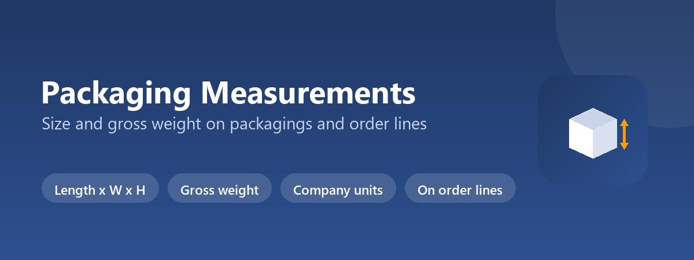

Record the length, width, height and gross weight of each product packaging and show them on sales order lines.
Enter the measurements once on the packaging, whether it is a box, a carton or a pallet. Each packaging then shows a readable summary such as 120.00 x 80.00 x 100.00 cm and 25.00 kg. Salespeople see the same figures on their order lines by switching on two optional columns.
📏 Size and weightLength, width, height and gross weight on every packaging, in the packaging list and on its form. |
🏢 Units per companyChoose one dimension unit and one weight unit for the whole company in the Inventory settings. |
🔧 Own units allowedOptionally let each packaging use its own dimension unit, its own weight unit, or both. |
📄 Readable summaryEach packaging shows its measurements as one clear line, with a dash for any side that was not measured. |
🛒 On order linesTwo optional columns on sales order lines show the dimensions and gross weight of the chosen packaging. |
🔒 Confirmed orders unchangedQuotations follow the packaging's latest figures; confirmed orders keep theirs even if the packaging is edited later. |
Odoo 18.0 • Community & Enterprise • depends on Inventory and Sales • Licence LGPL-3
Odoo implementation and development. thecodelegion.com